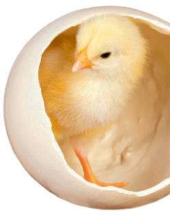

Продаж добових курчат бройлерів та несучки, послуги інкубації
ЗамовитиАдреса
Україна, Черкаська область, Корсунь-Шевченківський район, с. Петрушки, вул. Набережна, 36
Переваги
1
Виробнича потужність інкубатора – 32 млн. шт.
інкубаційного яйця в рік
2
На підприємстві встановлене обладнання
англійської компанії «BUCKEYE SM-24»
3
Все інкубаційне обладнання працює в автоматизованому режимі, всі дані зберігаються в електронному вигляді
4
Курчат вакцинують на найсучаснішому обладнанні включаючи аерозольно в in-line спрей та ін’єкційно (підшкірно, внутрішньом’язово) за допомогою біо-інжекторів
5
Транспортування добового молодняка здійснюється вже через декілька годин спеціалізованими автомобілями, місткістю від 70 тис голів до 100 тис голів
6
Зали для прийому та зберігання інкубаційного яйця обладнанні системою клімат-контроль
7
Вигідне місце розташування інкубатора – центральна частина України – сприяє транспортуванню курчат в різні регіони країни в максимально короткі строки
Про компанію
ТОВ «ІНКУБА» засноване у 2009 році в селі Петрушки, Корсунь-Шевченківського району, Черкаської області Підприємство займається комплектуванням птахофабрик добовим молодняком яєчного напрямку продуктивності кросу «Ломан Браун класік», "Ломан Браун Екстра", "Ломан ЛСЛ-Класік" та "Ломан Сенді" та бройлерами кросу ROSS-308 і COBB-500 Інкубаційне яйце несучки завозиться із власних племінних ферм, які знаходяться в Словакії м. Нітра, компанія «LIAHARENSKY PODNIK NITRA».